Formar carácter
y conducta.
Formar el carácter y la conducta de los niños y jóvenes utilizando el aprendizaje activo-constructivista.
Más que un colegio, una comunidad
Un mundo de posibilidades te espera en el Centro Educativo El Cedro.
Niños y jóvenes aprenden a través de la práctica individual y colectiva, con pensamiento crítico, creatividad y colaboración, en un ambiente propicio y seguro.
Un mismo camino.
De Maternal a Bachillerato.
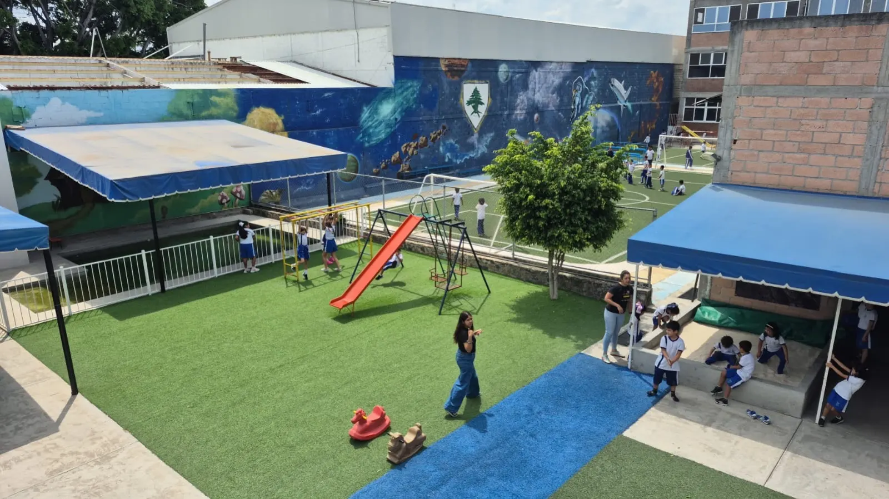
Aprender haciendoModelo activo-constructivista · HighScope
Crecer en dos idiomasFormación bilingüe y atención personalizada
Un camino con respaldoEducación básica IEBEM · Bachillerato CCH UNAM
01 / Nuestro proyecto educativo
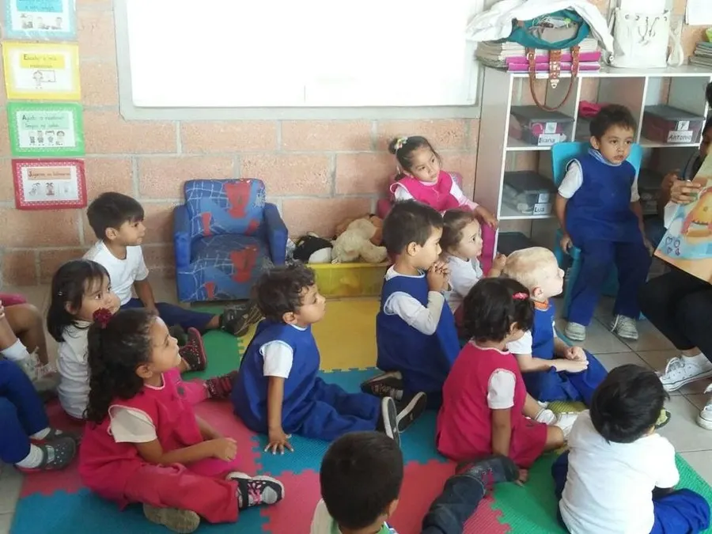
Aprendemos con las manos,Impulsamos la curiosidad, la solución de problemas, la independencia y la responsabilidad en todos los niveles.
Nuestro proyecto utiliza el aprendizaje activo-constructivista basado en el currículum HighScope. Por 15 años hemos desarrollado una experiencia de vanguardia en donde los alumnos adquieren el conocimiento con procesos activos que involucran personas, materiales y situaciones diversas.
El modelo activo-constructivista lo hemos adaptado para los niveles de primaria y secundaria, que otorgan herramientas necesarias para el desarrollo cognitivo, intelectual, físico y social, obteniendo grandes resultados en concursos, competencias y actividades de la vida diaria de nuestros alumnos.
Para el nivel medio superior, basados en la currícula del Colegio de Ciencias y Humanidades UNAM y sin perder de vista el aprendizaje activo-constructivista, impulsamos a nuestros alumnos a desarrollar sus talentos que los llevarán al éxito futuro.
“Me lo contaron y lo olvidé, lo vi y lo entendí, lo hice y lo aprendí.”Una idea que inspira nuestro aprendizaje
Formar el carácter y la conducta de los niños y jóvenes utilizando el aprendizaje activo-constructivista.
Ser ejemplo de aprendizaje integral en educación básica y media superior para la formación de personas con valores humanos y altos estándares intelectuales.
Que los alumnos se sientan felices y en confianza para aprender, descubrir y desarrollar habilidades y destrezas, fortaleciendo la empatía y la autonomía como herramientas para su futuro.
02 / Niveles educativos
De los primeros pasos a la universidad. Un mismo modelo activo-constructivista, adaptado a cada etapa del desarrollo: desde los 8 meses hasta la preparación para la educación superior, con una formación alineada a los planes y programas de estudio vigentes.
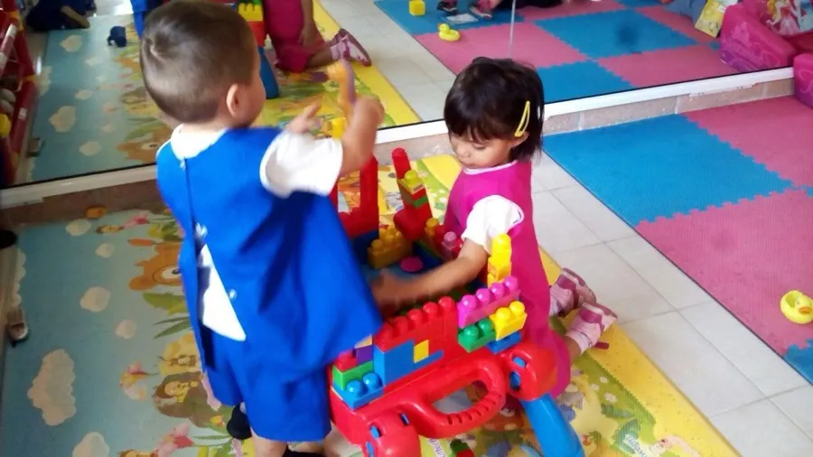
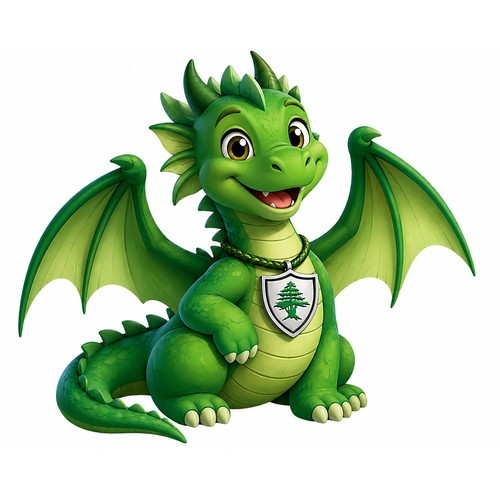
MaternalDesde 8 mesesEl espacio ideal para el desarrollo inicial de los niños en lenguaje, motricidad y autonomía, mientras juegan y hacen amigos.
Talleres
Bajo un esquema bilingüe y personalizado, los niños aprenden a través del juego, experimentan en sus proyectos y vivencias, buscando el mayor desarrollo en las interacciones sociales. Nuestro programa integral incluye:
Talleres
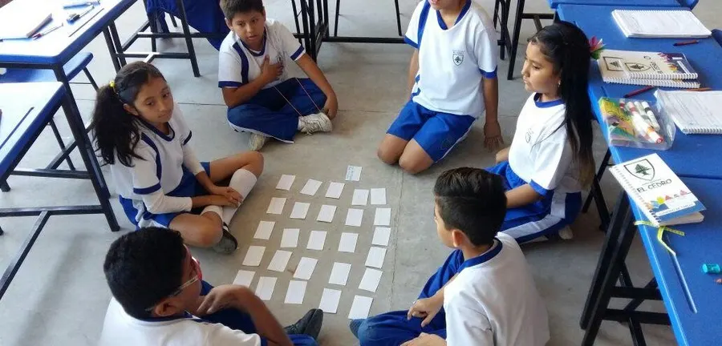
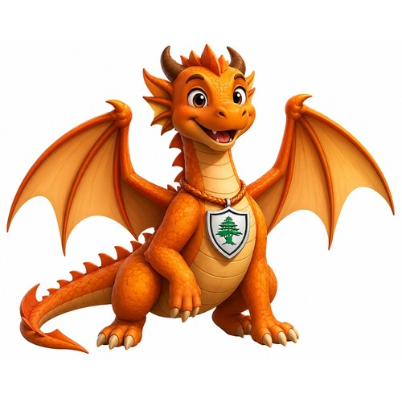
PrimariaAulas por área temáticaOfrecemos un programa bilingüe y personalizado en donde el trabajo colaborativo y la resolución de problemas son primicia. Nuestras aulas están organizadas por áreas temáticas (matemáticas, lectura, ciencia, arte y música). A través de una rutina diaria que incluye el trabajo de “Planear-Hacer-Revisar”, los alumnos conectan las áreas de estudio con experiencias de la vida diaria.
Talleres
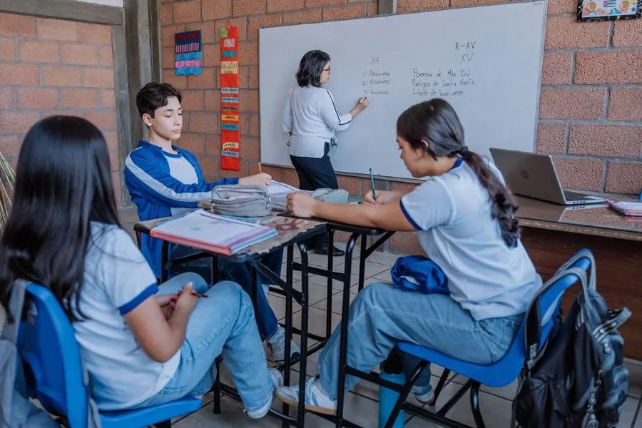
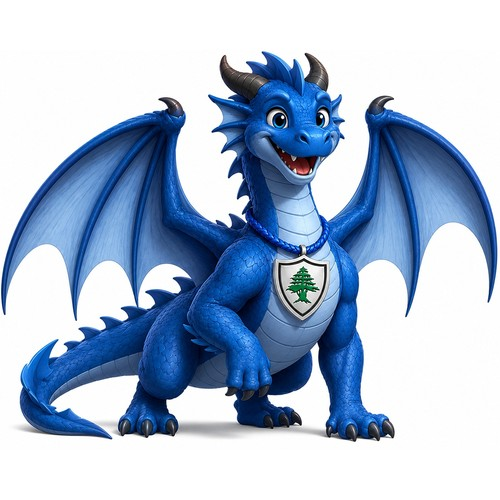
SecundariaConstruyendo el camino hacia el futuroEn nuestra secundaria enfatizamos la preparación para ser personas funcionales y con conciencia social. Continuamos con nuestro enfoque de aprendizaje activo adaptado a los retos de la adolescencia, en donde los alumnos desarrollan habilidades acordes al tiempo que vivimos: pensamiento crítico, independencia y responsabilidad, colaboración, creatividad y comunicación efectiva. Creamos un ambiente donde cada estudiante se siente seguro para expresar sus ideas y desarrollar su personalidad.
Talleres
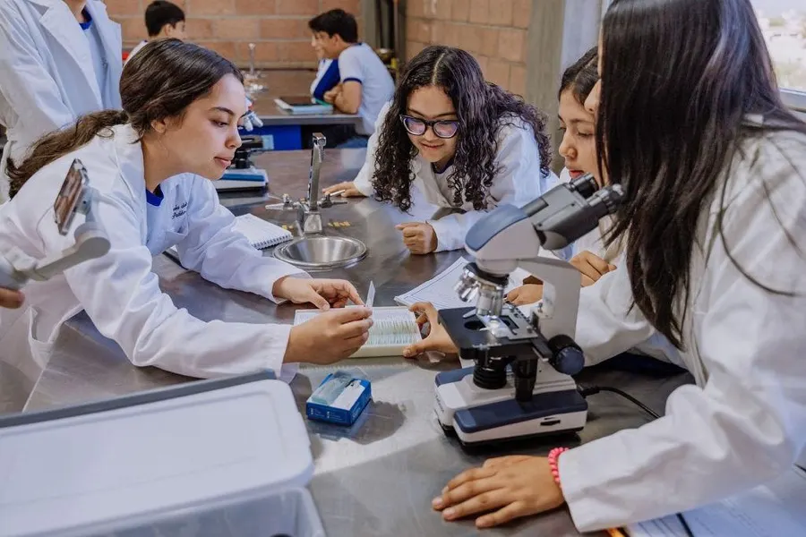
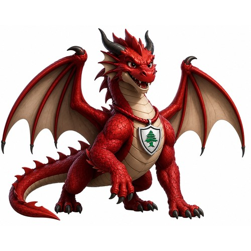
BachilleratoIncorporado a CCH UNAMNuestro Bachillerato, orgullosamente incorporado a CCH UNAM, ofrece un programa de excelencia diseñado para enfatizar la preparación para la universidad y la vida profesional. A través de un modelo educativo que promueve la autonomía, la investigación y la aplicación práctica del conocimiento, nuestros estudiantes adquieren las herramientas necesarias para enfrentar los desafíos del siglo XXI. Brindamos un acompañamiento cercano para que cada alumno descubra su vocación y desarrolle al máximo su potencial académico y humano.
Talleres
03 / Más allá del aula
No es necesario estar inscrito en El Cedro. Nuestros talleres deportivos, artísticos y académicos están abiertos a toda la comunidad.
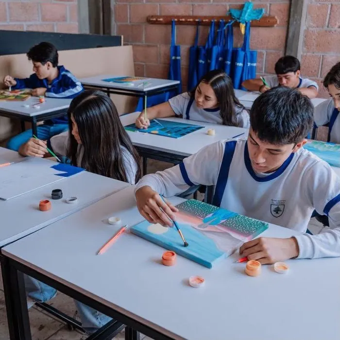
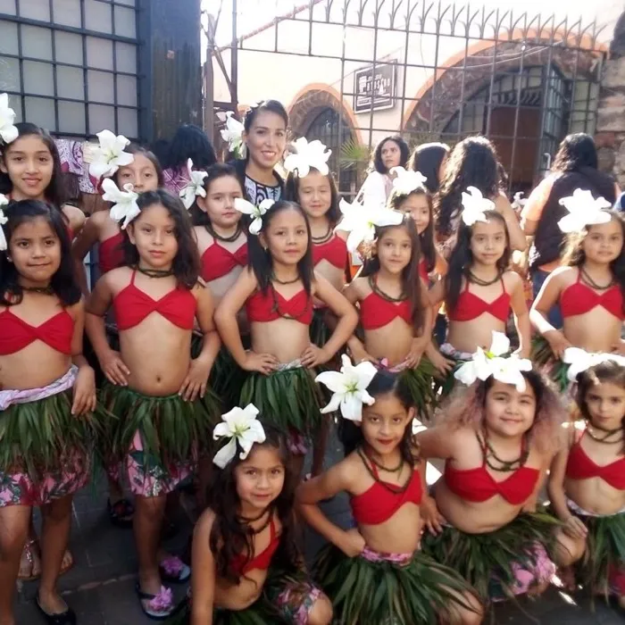
Además de los talleres de Primaria, también ofrecemos:
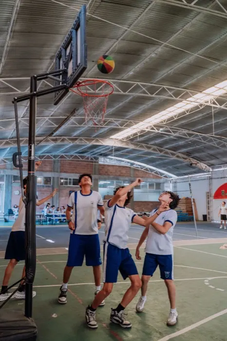
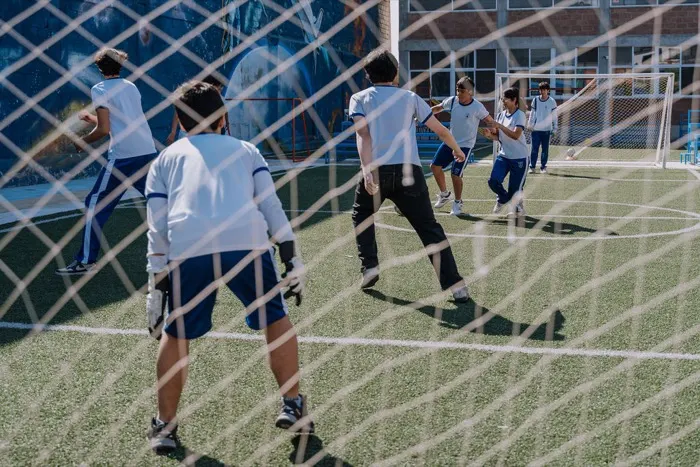
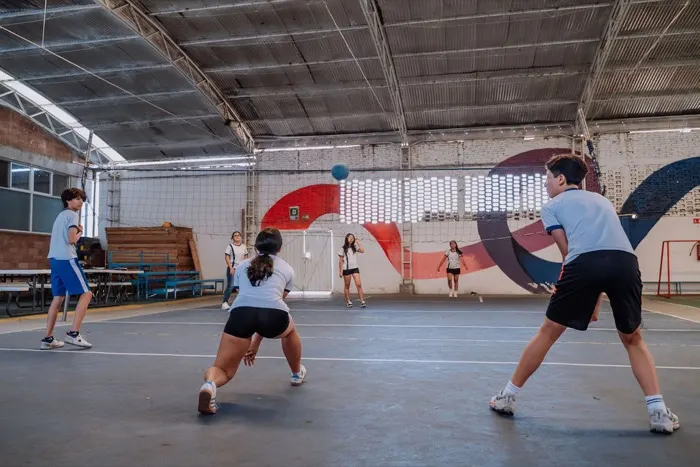
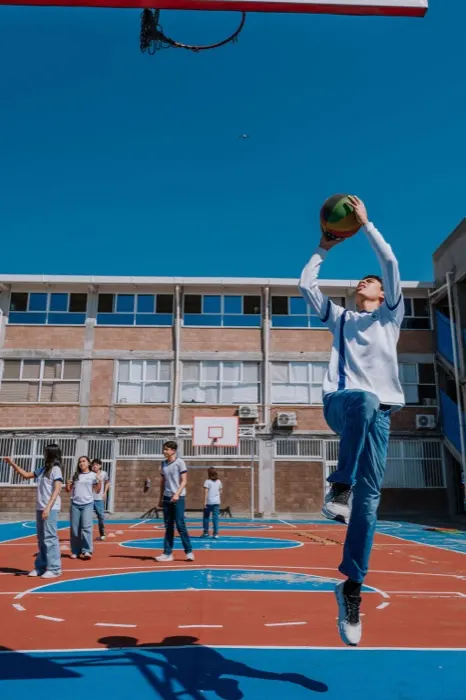
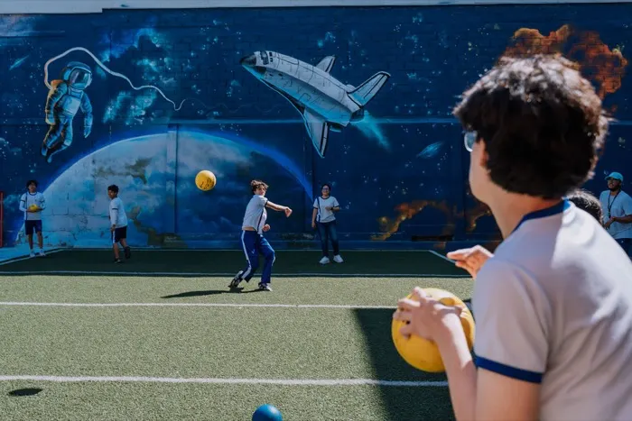
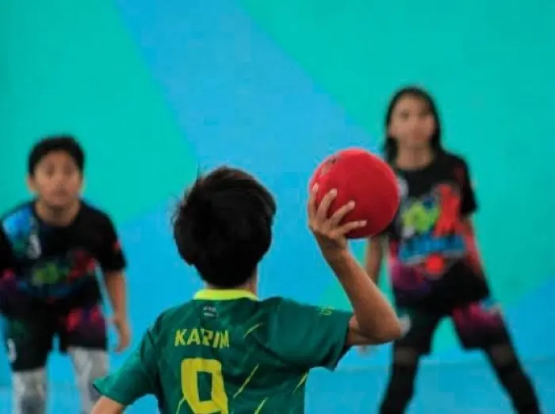
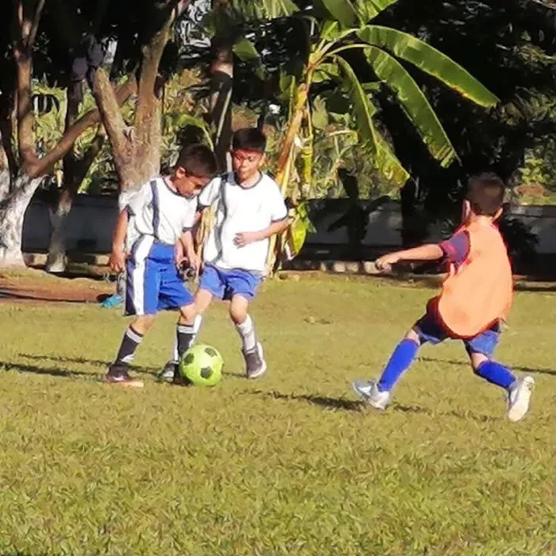
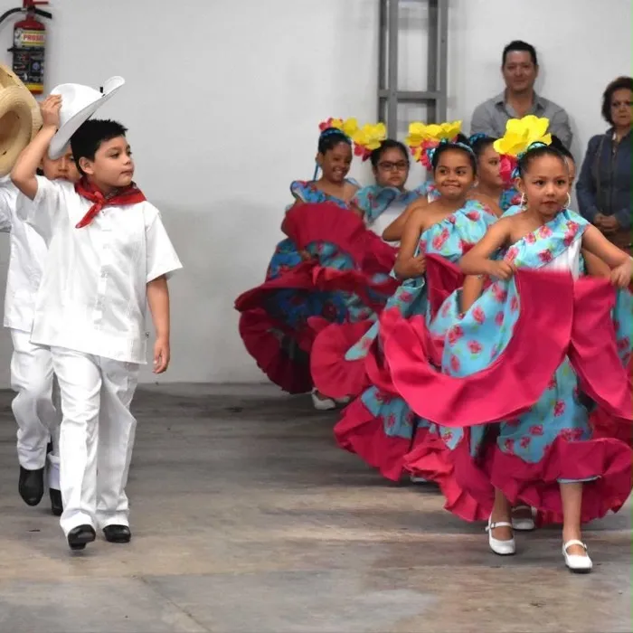
04 / Preguntas frecuentes
Lo que más nos preguntan las familias sobre inscripciones, niveles y talleres.
Conversemos por WhatsAppSí. Nuestro Bachillerato opera bajo el Colegio de Ciencias y Humanidades (CCH), Acuerdo CIREyTG núm. 07/26 del 23/03/2026, Clave de Incorporación UNAM 7552.
Aprendizaje activo-constructivista basado en el currículum HighScope en los niveles iniciales, adaptado en primaria y secundaria, y con base en la currícula del CCH UNAM en bachillerato.
Desde Maternal hasta Bachillerato, todo bajo el mismo modelo educativo.
No, están abiertos a todo el público.
Deportivos, artísticos y académicos: fútbol, danza, cocina, fotografía, educación musical, francés, inglés y regularización de español, matemáticas e inglés, entre otros (varían por nivel).
Antigua Carretera México–Cuautla 118, colonia Lázaro Cárdenas, Cuautla, Morelos.
Por WhatsApp, Facebook (@ElCedroCuautla) o al teléfono 735 398 7070.
Con gusto te damos los costos durante la entrevista. Agenda una cita por WhatsApp o Facebook.
Clases en horario matutino y talleres extraescolares en horario vespertino.
1) Agenda una cita por cualquiera de nuestros medios de contacto. 2) Ven a nuestras instalaciones para una entrevista. 3) Trae completa la documentación solicitada para formalizar la inscripción.
Sí, somos un colegio 100% bilingüe.
No contamos con servicio de transporte escolar ni de comedor.
Nuestros grupos son de 15 a máximo 20 alumnos, lo que permite atención personalizada.
Las inscripciones están abiertas durante todo el año. ¡Visítanos!
05 / Nos encantará conocerte
Escríbenos, llámanos o visítanos en Cuautla. Con gusto resolvemos tus dudas sobre inscripciones, niveles y talleres.
Agenda una visita por WhatsApp